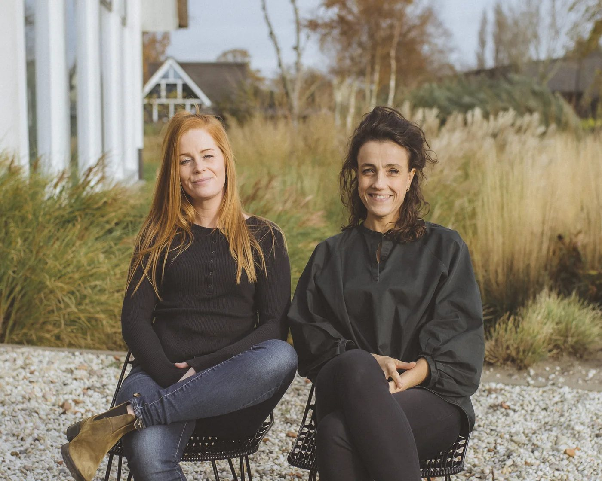
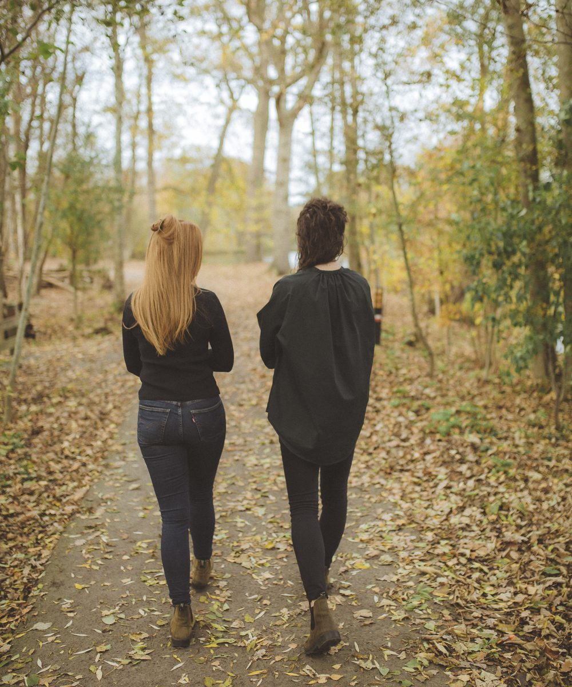
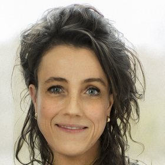
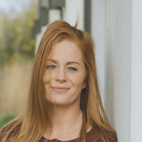

Explore
Zelf aan de slag
Kennis, inspiratie en praktische tools: blogs, gedichten, films en interviews over leefstijl, bewustzijn, systemisch werk en transgenerationeel trauma.
Backpack · Amsterdam · Voorschoten · Online
Vastgelopen in patronen, aanhoudende klachten of stress die niet weggaat? Wij zoeken samen naar de oorzaak — niet naar symptoombestrijding. Om van daaruit te bewegen naar meer balans.

Wat draag jij met je mee?
Daarin zit veel moois: je talenten, je kwaliteiten, je essentie en vele ervaringen. Tegelijk kan hij gevuld zijn met onverwerkte verhalen van eerdere ervaringen die je, vaak onbewust, meedraagt. Dat kan zich uiten in:
Geen quick fix, geen symptomen bestrijden — maar terug naar de kern, daar waar het begon. Je hoeft het niet alleen te doen, en het kan stap voor stap.

Unpack your story
Gratis · 5 minuten · geen account nodig
Nog niet klaar voor een gesprek? Begin hier. In een paar minuten krijg je zicht op welke lagen je kunt werken, wat jouw stip op de horizon is en wat jij nu nodig hebt. Er worden geen gegevens verzameld of opgeslagen. Jouw antwoorden zijn alleen voor jou.
Ons aanbod
Weet je niet welke vorm bij je past? Dat hoeft ook niet — in de gratis kennismaking kijken we er samen naar.
Explore
Kennis, inspiratie en praktische tools: blogs, gedichten, films en interviews over leefstijl, bewustzijn, systemisch werk en transgenerationeel trauma.
Discover
Onderzoek onder professionele begeleiding wat je meedraagt. Je krijgt inzicht in hoe leefstijl je gezondheid beïnvloedt, plus praktische tools en adviezen voor voeding, beweging, slaap, energie, stressmanagement en zingeving. Verdiepend kijken we naar je familiesysteem en wat je (onbewust) met je meedraagt.

Intake 60 min €149 · vervolg vanaf €99
Unpack
Krijg inzicht in je familiesysteem. Verwerk onder professionele begeleiding wat nog onverwerkt is. In een veilige setting doorvoel je wat toen niet gevoeld kon worden. Geen hypnose — je blijft tijdens de sessie volledig bij bewustzijn.

Intake 180 min €299 · vervolg €249
Hoe werkt het
Twintig minuten, vrijblijvend en online. Je vertelt wat er speelt, wij vertellen wat we kunnen betekenen. Daarna beslis je rustig.
Je vult vooraf een intakeformulier in. In de eerste sessie brengen we samen in kaart wat er speelt en waar we zouden kunnen beginnen. Bij Maaike heb je daarna direct na het intakegesprek een regressiesessie.
Sessies op jouw tempo, met een plan op maat. Geen vast aantal, geen abonnement — we kijken steeds samen wat je nodig hebt.
De sessies worden niet vergoed door de zorgverzekeraar. Wél worden ze regelmatig vergoed vanuit een persoonlijk ontwikkelingsbudget — vraag het je werkgever. Bekijk alle tarieven

Even voorstellen
Voordat je een afspraak maakt wil je waarschijnlijk weten met wie je te maken krijgt. Clementine is arts, Maaike therapeut — en we werken allebei op onze eigen manier naar dezelfde kern toe.
Onze werkwijze
Drie benaderingen, die elkaar kunnen aanvullen en versterken. Stap voor stap begeleiden we je naar de kern. Jij bepaalt welke benadering voor jou passend is.
Inzicht in de invloed van leefstijl op je gezondheid. Praktische tools en adviezen rond voeding, beweging, slaap, energiemanagement, stressregulatie en zingeving — met aandacht voor alle lagen van gezondheid: fysiek, emotioneel, mentaal en spiritueel.
Door inzicht in je familiesysteem en onbewuste dynamieken wordt duidelijk waar klachten, patronen of blokkades hun oorsprong vinden. Je wordt je bewust van jouw Backpack.
Onverwerkte ervaringen die zich hebben vastgezet in je denken (overtuigingen), voelen (lichaam en emoties) en doen (gedrag) krijgen ruimte om verwerkt te worden. Je Backpack wordt lichter en er ontstaat ruimte voor heling en groei.
Wat het je kan brengen
Concrete handvatten voor een gezondere leefstijl.
Klachten en patronen kunnen verminderen of verdwijnen.
Meer rust in je hoofd, meer richting.
Hernieuwde levensenergie en meer veerkracht.
Inzicht in je familiesysteem en bewustwording van je Backpack — wat je meedraagt en wat je onbewust meedroeg.
Duurzame verandering ontstaat wanneer het dagelijks leven en innerlijk werk elkaar ontmoeten
Reviews
Ik heb een sessie gehad bij Maaike en het heeft me veel nieuwe inzichten gegeven. Supergaaf om dit te mogen ervaren — ik ben enorm dankbaar voor Maaike's talent en begeleiding.
HelenaRegressietherapieMaaike nam al mijn angsten van tevoren weg en heeft me heel goed begeleid de hele sessie door. Ik voelde me rustig en vertrouwd. Ook de nazorg was fijn, ze denkt echt met je mee.
AylaRegressietherapieClementine really wanted to get deep into the root cause of my problems and listened to me really carefully. She gave me really useful, applicable tips to change my lifestyle for the better.
SaraLeefstijl, integrale geneeskunde & systemisch werkBedankt voor alle waardevolle sessies Clementine. Het heeft me zoveel mooie nieuwe inzichten gegeven en laten voelen.
TessaLeefstijl, integrale geneeskunde & systemisch werkBij Maaike voel je je meteen op je gemak en ze weet goed door te vragen. Nu een dag later voel ik me een stuk vrijer, lichter en vooral vol liefde en leven.
MandyRegressietherapieHele fijne sessies met Clementine gehad, met ook praktische tips waar ik mee aan de slag kan.
SofieLeefstijl, integrale geneeskunde & systemisch werkInspiratie

Een film die de Backpack-metafoor mooi raakt.

Aflevering van NPO De verwondering met schrijver Bas Steman over zijn ervaring met regressie.

Interview met natuurkundige en filosoof Bernardo Kastrup in NRC Future Affairs over hoe kwantumfysica ons wereldbeeld op zijn kop zet.
Voor organisaties
Voor teams, organisaties, congressen en events. Over leefstijl en gezondheid, het verhaal achter de klacht, patronen doorbreken en transgenerationeel trauma. Enthousiast en nuchter, in eenvoud maar met diepgang.
Twintig minuten, vrijblijvend en gratis. Je ontdekt of onze aanpak bij je past — en wij of we je verder kunnen helpen.
Plan gratis kennismaking →Weet je al bij wie je wilt zijn? Boek direct bij Clementine of bij Maaike.